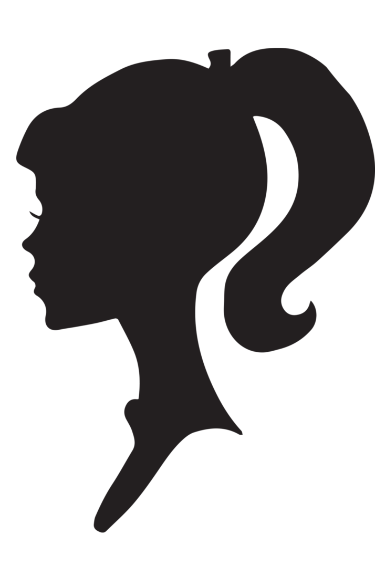

<ion-view>
  <ion-content>
    <ui-gmap-google-map center="dataHolder.mapCenter" zoom="dataHolder.map.zoom" options="dataHolder.options" refresh="dataHolder.map.refresh">
      <ui-gmap-map-type options="squaresMapType"></ui-gmap-map-type>
      <ui-gmap-circle center="dataHolder.circle.center" radius="dataHolder.circle.radius" visible="dataHolder.circle.visible" stroke="dataHolder.circle.stroke" fill="dataHolder.circle.fill"></ui-gmap-circle>
      
        <ui-gmap-window 
          show="dataHolder.window.show" 
          options="dataHolder.window.options" 
          coords="dataHolder.window.model.pos"
          closeClick="dataHolder.window.closeClick()"
          >
          <div class="height-100">
            <div class="clearfix user-window-top">
              <div class="user-avatar fleft height-100">
                
              </div>
              <div class="user-details fleft">
                <div class="margin-bottom-5">
                  <i class="icon ion-person"></i>
                  {{dataHolder.userDetails.name}}
                </div>
                <div class="margin-bottom-5">
                  <i class="icon ion-chatbubbles"></i>
                  {{dataHolder.userDetails.age}} years
                </div>
                <div class="margin-bottom-5">
                  <i class="icon ion-android-pin"></i>
                  {{dataHolder.userDetails.location}}
                </div>
             </div>
            </div>
            <div class="clearfix user-window-bottom">
              <div class="fleft width-50">
                <a hef="#" ng-click="$parent.viewUser()"><i class="icon ion-eye"></i></a>
              </div>
              <div class="fleft width-50">
                <a hef="#" ng-click="$parent.contactUser()"><i class="icon ion-chatbubbles"></i></a>
             </div>
            </div>
          </div>
        </ui-gmap-window>

        <ui-gmap-markers
          models="dataHolder.markers" 
          coords="'pos'" 
          icon="'options.icon'"
          events="dataHolder.markersEvents"
          type="'cluster'" 
          typeOptions="'dataHolder.cluster'"
        >
        </ui-gmap-markers>

    </ui-gmap-google-map>
  </ion-content>
</ion-view>
